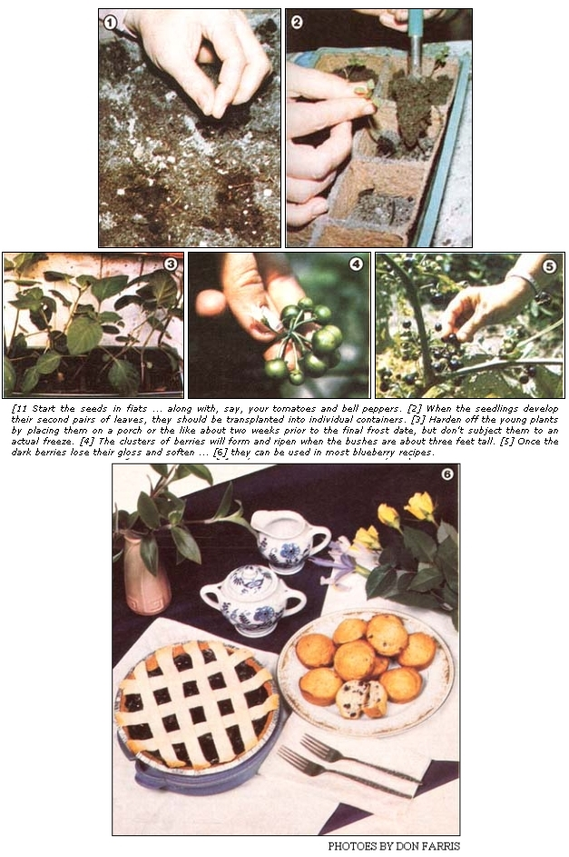

Plant this speedy garden fruit after frost & you'll blessed with a bountiful crop of pie-perfect berries in a more 80 days!
When my family and I finally obtained our South Carolina homestead, we-like many newly landed folksIssue no. 80 - March/April 1983were eager to get some fruit trees planted. However, price those young hardwoods were in the ground (and looking disappointingly small and vulnerable), we were forced to face the fact that it would be years before they yielded a sizable crop. So in an effort to hurry our production of homegrown pie makings, I set out in search of fast-bearing alternatives ... and discovered the garden huckleberry.
Interestingly enough, Solanum melanocerasum is one of the nightshades. It seems that this little fruit, which grows on rangy 2-1/2-foottall (or larger) plants, requires the same horticultural techniques as does its tomato relatives ... which the garden huckleberry resembles in both foliage and growth characteristics. Needless to say, the opportunity to harvest homegrown berries in one season appealed to me ... so I dutifully sent off for some seeds (see the accompanying access list for the names of firms carrying S. melanocerasum seeds).
I timed the starting date for my huckleberries to coincide 'with that for our tomatoes, eggplants, and peppers (all members of the nightshade family) and sowed the berry seeds in flats, spacing them about two inches apart. Once the resulting seedlings formed second leaves, I moved them into peat pots . . . and, during the course of the plants' "infancy", I made sure that each little berry-bearer received five hours of grow-light exposure and four hours on a south-facing windowsill daily. (I also treated the seedlings to regular doses of the same liquid fertilizer that I fed to my "baby" tomatoes.)
Then, about two weeks prior to my area's last projected frost date, I hardened off the young plants by moving them to the screened porch (I did bring the seedlings in if the overnight temperature was predicted to drop below 45°F, though). After the frost date had passed, I planted the berries in various locations around my garden (to determine whether any particular light or soil characteristics appealed to them) and gave my surplus plants to my mother-in-law.
I harvested only a fair crop that first year (although I did find out that the huckleberries prefer partial shade), but my mother-in-law-who set her plants in the rich soil adjacent to her chicken yard-had fruit to freeze, can, sell, and give away. So, come the following spring, I was careful to put all of my transplants in partial shade and to feed each new garden resident ... by working a shovelful of compost into its site be fore planting. And the extra care made a real difference. In fact, I couldn't pick the berries fast enough!
Garden huckleberries look ripe when they turn black and shiny (in fact, that's when I picked most of my first year's crop), but I soon discovered that the flavor is better after that gloss fades and the little fruits begin to soften. (Don't expect these unusual edibles to be as sweet as any "real" berry when eaten raw ... in fact, many folks actually can't stand them fresh off the plant, but a real culinary miracle occurs when you cook and sweeten garden huckleberries!)
To prepare the fruits for use in most recipes, it's necessary to subject them to heat (to soften them) and to add about 1-1/4 cups of sugar for every four cups of raw berries. [EDITOR'S NOTE: Sweetness is, of course, a matter of personal taste ... and we also suspect that it would be quite easy to substitute a lessprocessed product for the white sugar called for in Ms. Farris's recipes.] If I'm making a pie, for instance, I first simmer four cups of berries, with just enough water to prevent scorching, for 20 minutes. Then I add the sugar and four tablespoons of cornstarch or tapioca ... stir the filling till it thickens ... remove it from the heat to cool ... pour it into a shell ... and cover it with a top crust. I put the pie in a 425°F oven for 10 minutes ... then reduce the heat to 350°F and continue baking for 30 to 40 minutes, or until the top is browned. The cooked and sweetened fruit is also delicious in pancakes, muffins, and such.
After the success of my second year's crop, I found myself with enough berries on hand to try some preservation techniques. I found that the fruit freezes quite well if it's first simmered for 15 minutes, then sweetened with about 1/3 cup of sugar per quart of berries, and packed into containers. I prefer to can my surplus, however, and that process is simplicity itself! Just spoon the raw berries into quart jars, add 1/3 cup of sugar to each, and pour in boiling water, leaving one-half inch of headspace. Then process the jars in a hotwater bath for 20 minutes.
All in all, garden huckleberries have a lot going for them. They're easy to raise (they'll actually reseed themselves in some areas) ... each plant can be expected to produce enough fruit for a pie ... and they yield ripe berries within 80 days or so after planting. What better remedy could there be for the slowgrowing-fruit-tree blues?.
|
 |
|
|